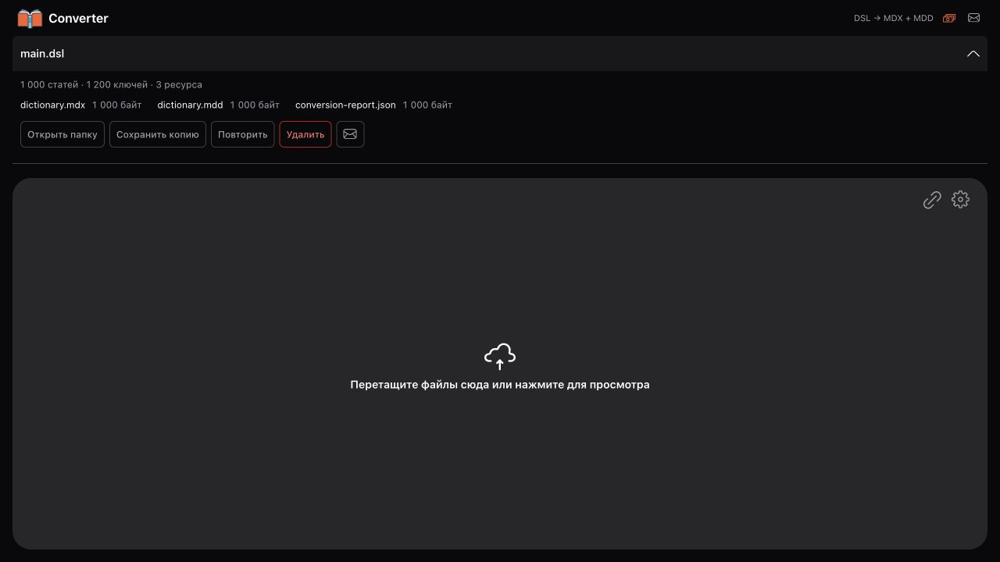

Файл, архив или ссылка
Выберите .dsl, .dsl.dz или ZIP. Загрузку по прямой ссылке можно приостановить и продолжить после сбоя.
Оформление, изображения и озвучка — вместе со словарём. Конвертируйте базы на своём компьютере и открывайте их в совместимой читалке.
Версия 0.2.6Без регистрации

Выберите .dsl, .dsl.dz или ZIP. Загрузку по прямой ссылке можно приостановить и продолжить после сбоя.
Статьи сохраняются в MDX, изображения и звук — в MDD. Готовые файлы можно сразу перенести в читалку.
Словарь обрабатывается на вашем компьютере. Установка PHP, Python и дополнительных сред не требуется.
На Mac откройте DMG и перенесите Converter в «Программы». На Windows запустите EXE-установщик.